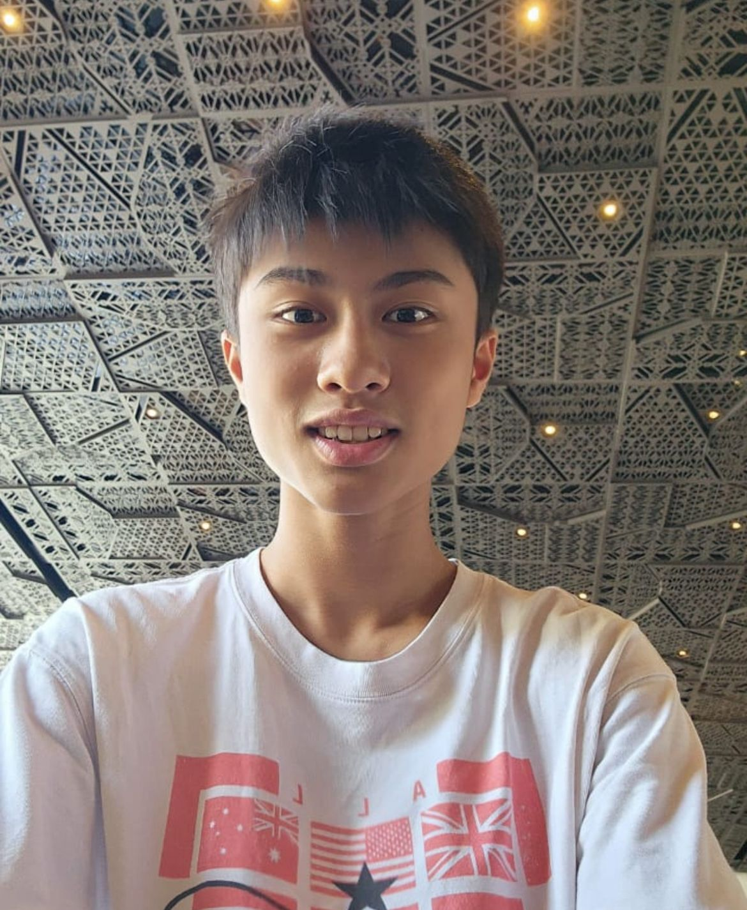

Mata Pelajaran TIK | Kelas: XI

Kolese Kanisius
Saya adalah siswa kelas XI dari Kolese Kanisius yang memiliki minat dalam bidang teknologi dan pemrograman web. Selama semester ini, saya telah mempelajari HTML, CSS, dan JavaScript untuk membuat berbagai project website interaktif untuk mempersiapkan diri menjadi seorang engineer.
| No | Materi | Nilai |
|---|---|---|
| 1 | Tugas Web Biodata | 80 |
| 2 | Mini Project: Web Branding | 100 |
| 3 | Ulangan Praktik Mini Website | 100 |
Implementasi dasar HTML dan CSS untuk membuat halaman biodata terstruktur.
Lihat Project →Aplikasi kalkulator fungsional menggunakan manipulasi DOM JavaScript.
Lihat Project →Aplikasi manajemen tugas interaktif untuk menambah dan menghapus daftar.
Lihat Project →